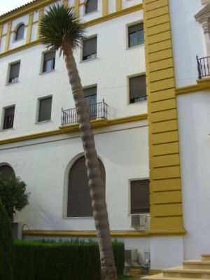
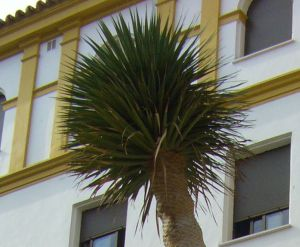

|
Dracaena draco (L.) L., Syst. Nat. ed. XII. 246 (1766-1768) Asparagus draco L. |
Agaváceas |
| Drago | Árbol palmiforme |
|
Árbol de 8 m [puede alcanzar hasta 15 m de altura]; tronco de 1,25 m de cuerda, simple y liso en los ejemplares jóvenes, ramificado, rugoso y con marcas en los ejemplares viejos. Hoja sentadas, alternas, densamente agrupadas en los extremos del tallo o de las ramas, de 50-60 x 3-4 cm, lineares, coriáceas pero flexibles, de color verde grisáceo. Inflorescencias en racimos densos, subterminales y ramificadas. Flores
blanquecinas. |
 |
|
 Fotos: Sandra Lladó Saz (2006) |
Observaciones: Dracaena, del griego drakaina = dragón o serpiente hembra, haciendo referencia a la savia rojiza a la manera de "sangre de dragón". La “sangre del drago”, obtenida mediante incisiones en su corteza, tiene propiedades medicinales y fue muy apreciada en el pasado. El ejemplar más famoso es el llamado Drago Milenario de Icod de los Vinos, aunque actualmente se estima que no llega realmente a los mil años y está en torno a los 500 o 600 años de vida. |
| Área de origen.- Islas Canarias | |
| Uso en el campus: un solo ejemplar como árbol ornamental | Localización: Colegio Mayor Hernando Colón |
|
Referencias: |
|
| Sandra Lladó Saz & Carlos Romero Zarco, 2006 | |